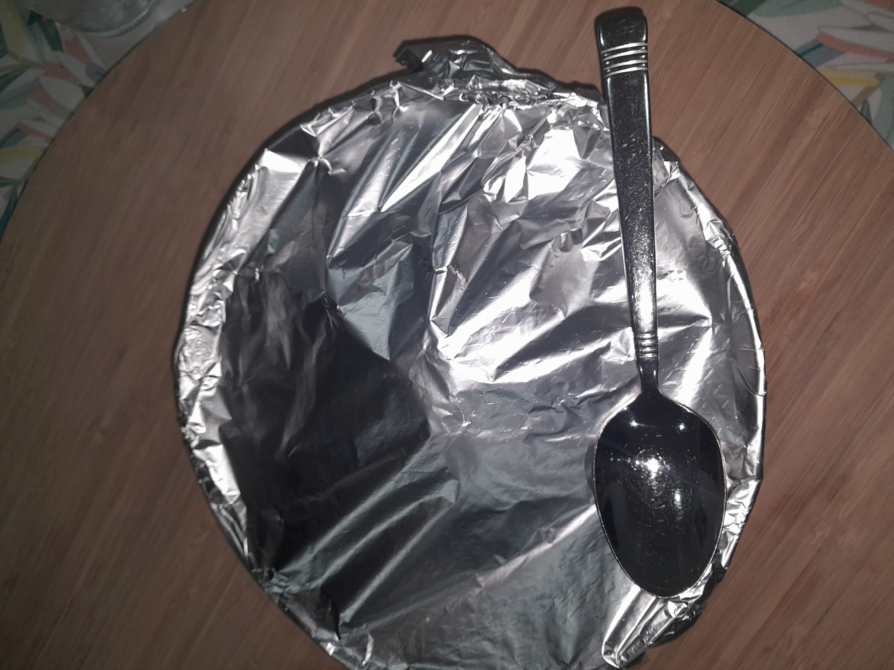

Let the meat absorb the
liquids until there is about
1/4 cup of liquid left.
Get your tortillas and put them in the oven for 10 minutes.
Step 4

Take your tacos out
and put it on a plate, put
the meat in a bowl to serve.
Step 5